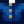

Leche de cabra XXL
| Leche de cabra XXL | |||||||||||||||||||||||
| Cuatro litros de cremosa leche de cabra. | |||||||||||||||||||||||
| Información | |||||||||||||||||||||||
| Origen | Cabra | ||||||||||||||||||||||
| Energía / Salud |
|
||||||||||||||||||||||
|
|||||||||||||||||||||||
|
|||||||||||||||||||||||
La Leche de cabra XXL es un producto animal que se obtiene de una Cabra con suficiente amistad y estado de ánimo. También se puede obtener de forma aleatoria en el Carro Ambulante por  1.035 – 1.725o.
1.035 – 1.725o.
Regalos
| Reacciones de Aldeanos
| |
|---|---|
| Le gusta | |
| Neutral | |
| No le gusta | |
| Odia | |
Lotes
- La Leche de cabra XXL es una de las opciones en el
 Lote Origen Animal en la Alacena.
Lote Origen Animal en la Alacena. - Diez unidades de Leche (de cualquier tamaño, incluida la Leche de Cabra y la Leche de Cabra XXL) pueden ser requeridos para el
 Lote Cocina Casera en el Tablón de anuncios (mezclado).
Lote Cocina Casera en el Tablón de anuncios (mezclado).
Productos Artesanales
- Ver también: Rentabilidad de productos animales
La Leche de cabra XXL puede ser usada para fabricar el siguiente Producto Artesanal. Tenga en cuenta que la Leche de cabra normal siempre produce Queso de cabra de calidad normal, mientras que la Leche de cabra XXL siempre produce Queso de cabra de calidad dorada. La calidad de la leche no es un factor que se tenga en cuenta.
El queso de cabra puede añejarse en Toneles para incrementar su calidad.
| Imagen | Nombre | Descripción | Ingrediente | Equipamiento | Tiempo | Precio de venta | ||||
|---|---|---|---|---|---|---|---|---|---|---|
| Queso de cabra | Un queso blando hecho con leche de cabra. |
|
Recetas
Nota: Para todas las recetas que requieran Leche, también se puede utilizar Leche XXL, Leche de cabra o Leche de cabra XXL.
| Imagen | Nombre | Descripción | Ingredientes | Energía / Salud | Bonificadores | Duración | Origen receta | Precio de venta | |||
|---|---|---|---|---|---|---|---|---|---|---|---|
| Salsa de alcachofa | Fresca y refrescante. | N/A | N/A |
|
|||||||
| Crema de almeja | La manera perfecta de entrar en calor tras una fría noche en el mar. |
|
|||||||||
| Desayuno inglés | ¡Te hace sentir listo para comerte el mundo! |
|
|||||||||
| Helado | Difícil encontrar a alguien a quien no le guste. | N/A | N/A |
|
|||||||
| Crema de langosta | Esta delicada sopa es una receta familiar secreta de Willy. |
|
|||||||||
| Capricho de minero | Mantiene tu energía muy alta. | ||||||||||
| Tortilla | Superesponjosa. | N/A | N/A |
|
|||||||
| Sopa de chirivía | Fresca y sustanciosa. | N/A | N/A |
|
|||||||
| Tarta de calabaza | Sedosa crema de calabaza sobre una masa de hojaldre. | N/A | N/A |
|
|||||||
| Sopa de calabaza | La preferida de la temporada. |
|
|||||||||
| Arroz con leche | Cremoso, dulce y divertido de comer. | N/A | N/A |
|
|||||||
| Pudding de plátano | Un postre cremoso con un increíble aroma tropical. |
Sastrería
La Leche de cabra XXL se utiliza en la bobina de la Máquina de coser para crear una  Camiseta. Es un tinte blanco cuando se utiliza en la bobina de la máquina de coser con una prenda teñible en el alimentador.
Misiones
La Leche de cabra XXL no se necesita en ninguna misión.
Historial
- 1.0: Introducido.
- 1.1: Incrementa su valor de
 275o a 345o.
275o a 345o. - 1.4: Se puede usar en la Sastrería.
- 1.5: Ahora puede utilizarse en recetas que requieran leche.
| Animales y Productos | |
|---|---|
| Corral | Conejo (Lana • Pata de conejo) • Dinosaurio (Huevo de dinosaurio) • Gallina (Huevo • Huevo XXL • Huevo Marrón • Huevo Marrón XXL) • Gallina dorada (Huevo dorado)• Gallina sombría (Huevo sombrío) • Pato (Huevo de pato • Pluma de pato) |
| Establo | Avestruz (Huevo de avestruz) • Cabra (Leche de cabra • Leche de cabra XXL) • Cerdo (Trufa) • Oveja (Lana) • Vaca (Leche • Leche XXL) |
| Estanque de peces | Pescados (Huevas) |
| Criadero de babas | Babas (Baba • Bola de baba • Huevo de baba) |
| Otros | Caballo • Gato • Perro |